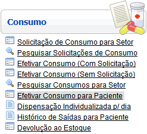
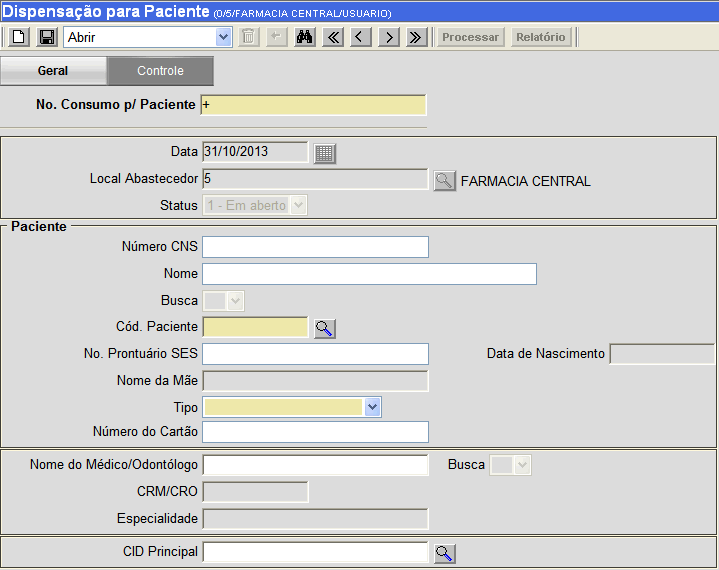
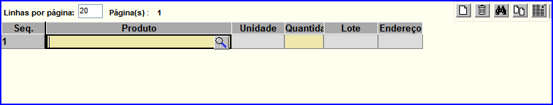
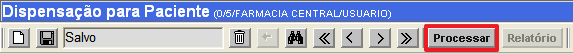
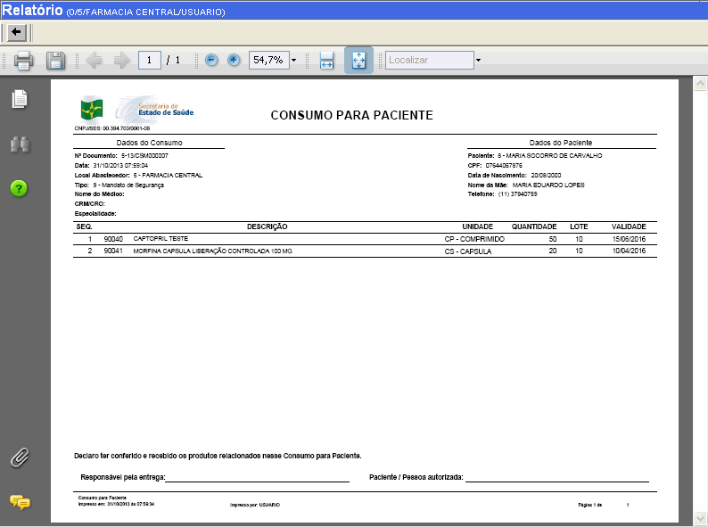

|
Efetivar Consumo para Paciente [ Voltar ]Essa tela permite o usuário realizar a dispensação de produtos para pacientes. O formulário "Efetivar Consumo para Paciente" encontra-se dentro do menu "Consumo". 
Após clicar no formulário, o sistema abrirá a seguinte tela: 
Siga os passos abaixo para efetivar um consumo para paciente. 1º Passo: preencha os dados do consumo para
paciente. Os campos em amarelo são obrigatórios.
2º Passo: clique no botão
 [Salvar] para salvar os dados do
consumo para paciente. Após salvar o registro, uma grade será
exibida na parte inferior da tela para a inclusão dos itens do consumo. [Salvar] para salvar os dados do
consumo para paciente. Após salvar o registro, uma grade será
exibida na parte inferior da tela para a inclusão dos itens do consumo.3°
Passo: selecione os medicamentos que devem constar neste consumo para
paciente. Clique no botão
 [Pesquisar] no campo Produto
para selecionar o item. Em seguida, informe a quantidade do mesmo no campo Quantidade.
Para incluir mais de um produto clique no botão [Pesquisar] no campo Produto
para selecionar o item. Em seguida, informe a quantidade do mesmo no campo Quantidade.
Para incluir mais de um produto clique no botão  [Novo] ou pressione a tecla "Enter". Utilize a tecla "Tab" para navegar entre os campos. [Novo] ou pressione a tecla "Enter". Utilize a tecla "Tab" para navegar entre os campos.4° Passo: clique no botão [Salvar] para
salvar os medicamentos e quantidades especificados na(s) linha(s).5° Passo: após informados todos os medicamentos e respectivas quantidades, clique no botão  [Processar] para
concluir o consumo. [Processar] para
concluir o consumo.  6º Passo (Opcional): Após processado o consumo, o botão  [Relatório] ficará habilitado para
geração do relatório "CONSUMO PARA SETOR ATENDIDO" (Ver figura abaixo). [Relatório] ficará habilitado para
geração do relatório "CONSUMO PARA SETOR ATENDIDO" (Ver figura abaixo). |